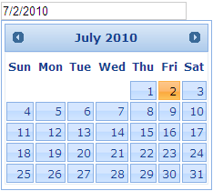

The following section guides you in defining the display conditions for the Date Picker.
Properties
|
Name |
Description |
Type of property |
Value it accepts |
Dependency |
|
DefaultDate
|
Used to define the selected date of the calendar on load |
struct |
DateTime.MinValue To DateTime.MaxValue
|
NA |
|
DisplayDefaultDateOnLoad
|
Used to define the minimum date, the calendar can navigate |
bool
|
true/false
|
NA |
|
MonthNames |
Used to customize the name of the months displayed in the header |
string[]
|
Array of strings of array length 12. |
NA |
|
FirstDay
|
Used to define the first day of the week header to start with |
enum |
DayOfWeek.Sunday, DayOfWeek.Monday, DayOfWeek.Tuesday, DayOfWeek.Wednesday, DayOfWeek.Thursday, DayOfWeek.Friday, DayOfWeek.Saturday |
NA |
Using Builder
The following section explains the seting of the default date for the Date Picker using Builder.
1. In View, invoke the date picker helper followed by the the DefaultDate and DispalyDefautlDateOnLoad methods with the desired options as arguments.
|
View[aspx]
<%=Html.Syncfusion().DatePicker("myDatPicker") .DefaultDate(DateTime.Now.AddDays(7)) .DisplayDefaultDateOnLoad(true)%>
|
|
View[cshtml]
@{ Html.Syncfusion().DatePicker("myDatPicker") .DefaultDate(DateTime.Now.AddDays(7)) .DisplayDefaultDateOnLoad(true).Render();}
|
2. Build and run the application.
Using Properties Model
The following section explains the setting of the default date for the Date Picker using the Properties model.
1. In the Controller, create an instance of the DatePickerModel, set the DefaultDate and DispalyDefautlDateOnLoad properties and pass the instance through View Specific Data to View, as shown below.
|
[Controller] public ActionResult Index() { //create an instance of DatePickerModel DatePickerModel myModel = new DatePickerModel(); myModel.DefaultDate = DateTime.Now.AddDays(7); myModel.DisplayDefaultDateOnLoad = true;
//pass the instance through view data to the view ViewData["myDatePicker"] = myModel; return View(); }
|
2. In View, invoke the Date Picker helper with the view data key as the control ID.
|
View[aspx]
<%=Html.Syncfusion().DatePicker("myDatePicker") %>
|
|
View[cshtml]
@{ Html.Syncfusion().DatePicker("myDatePicker").Render(); }
|
3. Build and run the application.
The Date Picker now renders the text box and the calendar is loaded with the defined date. The output is shown in the following screen shot.

Figure 107: Date Picker with Default Date loaded